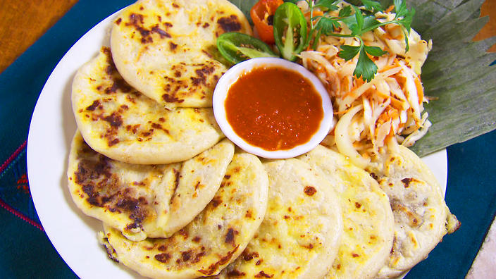

Pupusas

Las pupusas, un plato tipico de El Salvador, uno de los paises mas pequeños del mundo, ubicado en America Central. Las pupusas estan hechas con maiz nixtamalizado o harina de maiz, pueden contener queso, carne de cerdo, frijoles o mezcla de los ingredientes. Se come cacompañado de curtido y salsa de tomate.
Ingredientes.
- Maiz
- carne de cerdo
- Queso
- "Loroco"
- Frijoles
Pasos
- Preparar la masa de maiz
- Prepara la salsa
- Preparar el curtido
- Agregar los ingredientes a la masa de maiz
- Cocinar preferiblemente en un comal de barro